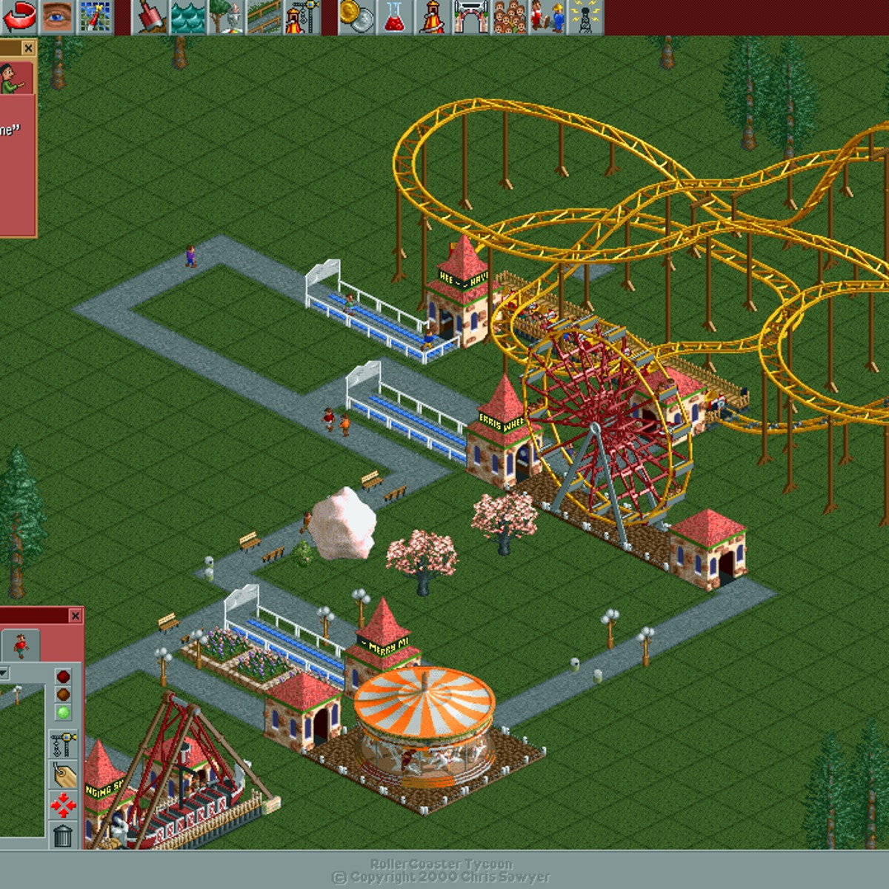
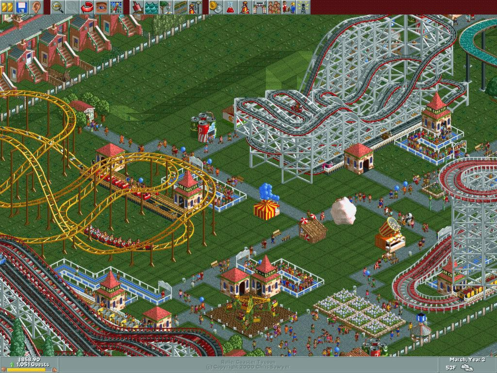

Kể ra thì mình chưa bao giờ tự nhận là "gamer" cả đời. Vinh quang duy nhất mình có trong làng game tuổi thơ là... tô màu trong Paint không lem ra ngoài viền. Đỉnh cao sự nghiệp gaming của mình nó bèo vậy đó, đừng cười.
Vấn đề là nhà mình có máy tính từ sớm — nhờ ba mẹ chịu chi, chứ không phải mình có công trạng gì. Và có máy thì kiểu gì cũng sẽ có ngày bị lôi vào con đường tội lỗi. Thủ phạm: anh trai ruột và một thằng nhóc hàng xóm (dạ, chính là "tớ" đang ngồi viết mấy bài kia, khỏi giấu luôn). Hai ông tướng suốt ngày qua nhà rủ coi chơi game, mà toàn trò bắn nhau đấm đá, mình nhìn phát ngán, với lại mẹ dặn né game bạo lực — thế là mình có cái cớ hoàn hảo để trốn lên phòng tiếp tục tô màu.
Cho tới cái ngày định mệnh, hai ông tướng đó vác qua một cái đĩa khác hẳn. Không súng, không máu, chỉ có một bãi đất trống trơ trọi. Lúc đó mình còn tưởng game gì kỳ, chẳng có gì để "đánh" hết á. Ai dè bấm vô chưa được năm phút là dính chấu luôn, hết đường trốn.
RollerCoaster Tycoon — cái tên nghe nghiêm túc dữ vậy chứ chơi vô là một mớ hỗn loạn ngay từ những phút đầu. Mình xây công viên mà cứ như đang phá công viên: đặt lộn đường, quên xây nhà vệ sinh (đúng nghĩa "số nhọ" phiên bản ảo), khách trong game biểu tình đòi ra về vì đói khát. Nhưng mà kỳ lạ ở chỗ — càng thất bại lại càng ham, cứ sửa tới sửa lui, kiểu tự làm khó mình cho vui vậy đó.


Sau đận xây công viên đầu tay be bét đó, mình đâm ra ghiền thiệt. Cứ tối tối là ngồi vọc, sửa từng cái hàng rào, dọn từng bãi rác, học cách không cho khách chết đói giữa đường nữa (bài học xương máu). Rồi một hôm, sau không biết bao nhiêu đêm thức khuya, mình hoàn thành một công viên mà tự mình cũng phải trầm trồ: đường đi ngay hàng thẳng lối, khu vui chơi chia đúng từng góc, tàu lượn siêu tốc uốn lượn đẹp như tranh vẽ. Xịn tới mức mình dám tuyên bố với chính mình: cái này còn ngon hơn Đầm Sen — cái tên mà hồi đó cứ nhắc tới là đám con nít cả xóm nhảy cẫng lên vì sung sướng.
Tới ngày đẹp trời, mình hí hửng gọi anh trai với "thằng bạn hàng xóm" qua khoe thành quả. Hai ông tướng ngồi xuống, mắt tròn mắt dẹt, còn buông một câu khen làm mình lâng lâng cả buổi. Đúng lúc đỉnh điểm vinh quang thì mẹ đi chợ về, gọi ra phụ bưng đồ. Mình chạy ù ra, đinh ninh có gì đâu mà lo, công viên để đó có ai động vào được.
Sai lầm chí mạng.
Quay lại bàn máy tính chưa đầy năm phút mà cảnh tượng trước mắt như sau một trận bão. Hai ông tướng không biết rờ vào đâu mà vặn hết tốc độ mấy cái tàu lượn lên max, khách ngồi trên quay tít mù tới mức thanh "buồn nôn" đỏ lòm hết cả màn hình. Có cái đu quay bị chỉnh sai thông số gì đó, quay một hồi thì văng cả cabin lẫn khách bay tứ tung ra ngoài hàng rào — trong game khách bay lơ lửng như diều đứt dây, còn hai ông tướng thì cười sặc sụa như vừa xem pháo hoa. Chưa hết, không biết đứa nào tay nhanh hơn não, xóa mất luôn mấy đoạn đường dẫn ra cổng — thế là toàn bộ khách trong công viên mình dày công xây kẹt cứng lại, đứng chen chúc không lối thoát, biểu tình giận dữ đầy màn hình.
Lúc đó mình đứng hình. Ban đầu còn bật cười vì cảnh hỗn loạn nhìn... thiệt sự khá là buồn cười (khách bay như siêu nhân thì ai nhịn cười nổi). Nhưng cười được vài giây là tắt hẳn, vì nhớ ra bao nhiêu đêm ngồi tỉ mẩn từng centimet đường đi, giờ tan nát trong chưa tới năm phút. Mình khóc thiệt luôn, không phải khóc nhè đâu, khóc vì tức. Giận hai ông đó cả mấy ngày trời, không thèm cho đụng máy tính chung nữa.
Giờ nghĩ lại thấy cũng đúng chất "số nhọ" của mình — công trình đẹp nhất đời gaming ngắn ngủi của mình lại chết trong tay chính hai đứa được mình mời tới chiêm ngưỡng nó.
Sau vụ đó mình cũng nguôi dần, dù thề luôn không bao giờ cho hai ông tướng rớ vào máy lúc mình không có mặt nữa. Giờ chơi game cũng hết hẳn từ đời nào, laptop toàn để làm việc. Nhưng thỉnh thoảng lướt Facebook thấy ai đó post ảnh công viên nước hay khu vui chơi, đầu óc mình lại tự động nhớ tới cái công viên xấu số năm nào — đẹp nhất, và cũng sống thọ ngắn nhất, trong lịch sử gaming của mình.
Mình thì chắc không rớ lại đâu, dọn dẹp một cái công viên xây tay từ đầu cực lắm. Nhưng ai tò mò thì game này giờ có bản Deluxe gom sẵn hai gói mở rộng, bán trên Steam, cài phát chơi liền — khỏi cần vác đĩa qua nhà ai như hồi xưa nữa.